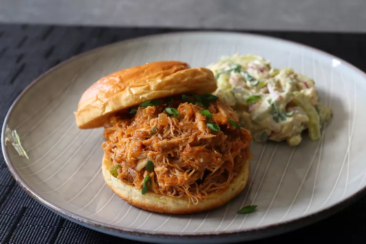

Home
Sloppy Chickens

Description
I'm showing you how to make what I like to call Sloppy Chickens, which are a cross between a pulled pork sandwich
and a
classic ground beef Sloppy Joe, except this chicken version is way easier than both of those. And don't let the
name
fool you, we're not going to need to pull any chicken, since as you'll see, it actually pulls itself. Garnish
these with
more green onion if desired.
Ingredients
- 1 tablespoons vegetable oil
- 4 cloves garlic, minced
- ½ large yellow onion, diced
- 1 tablespoon brown sugar, or to taste
- 2 teaspoons kosher salt, or to taste
- 1 teaspoon ground black pepper
- 1 pinch cayenne pepper, or to taste
- 2 pounds boneless, skinless chicken thighs
- ¾ cup ketchup
- 1 tablespoon Dijon mustard
- ½ teaspoon Worcestershire sauce
- 1 tablespoon hot sauce, or to taste
- 1 cup water
- 2 tablespoons thinly sliced green onions
- ½ cup diced jalapeño pepper
- 4 medium hamburger buns - split, toasted and buttered
Step
- Add vegetable oil to a saucepan, and then add (in this order) garlic, yellow onion, brown sugar, kosher
salt, black
pepper, cayenne, chicken thighs, ketchup, Dijon mustard, Worcestershire sauce, and hot sauce.
- Place over high heat and wait until you can hear the garlic sizzling in the bottom of the pan, about 30
seconds. Let
garlic sizzle for about 30 seconds before adding the water. Stir everything together and wait for the
mixture to boil.
- Reduce heat to medium-low and simmer, uncovered, until the chicken falls apart, about 1 1/2 hours.
- Stir in the green onions and peppers and cook until the peppers just turn tender, 3 to 5 minutes more. Taste
for
seasoning.
- Remove from heat and serve on toasted hamburger buns.